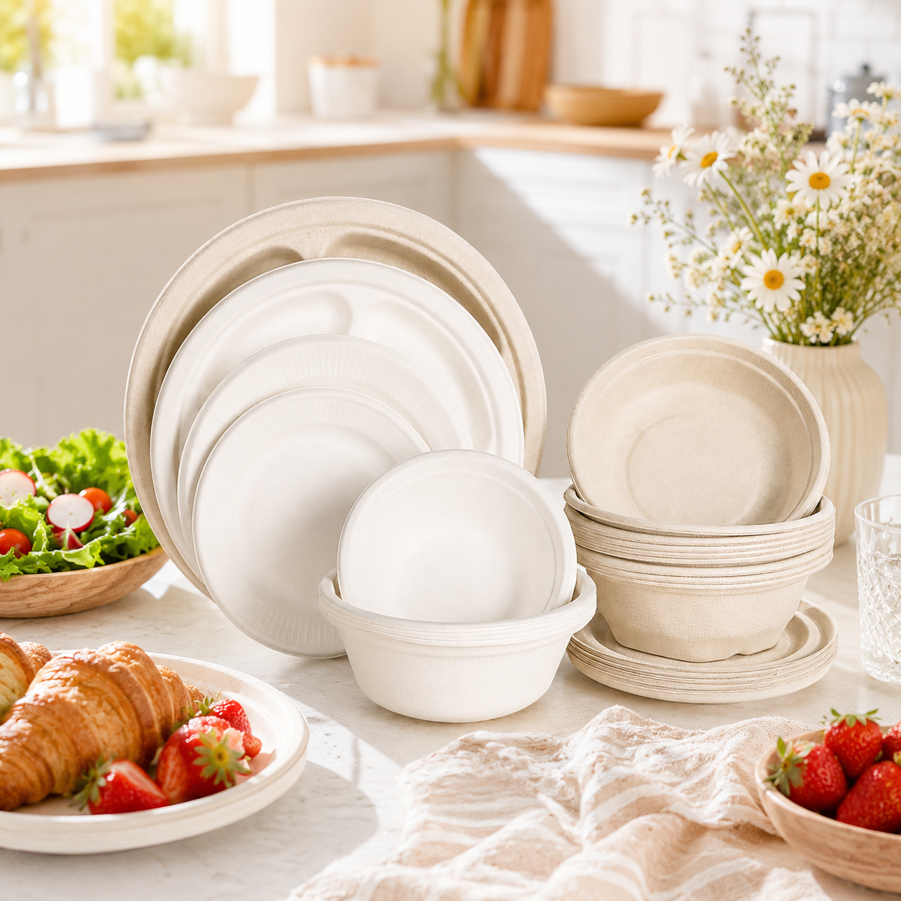

Food service collection
Bowls &
Trays
Versatile sugarcane bagasse formats for serving, packing and preparing hot or cold food.
Request product quote ↗
MaterialSugarcane bagasse
OptionsMultiple sizes and shapes
ApplicationsCatering, takeaway, food preparation
Product benefits
Practical by design.
01 Suitable for hot and cold food
02 Oil and water resistant options
03 Microwave-safe options available
04 Renewable plant-based material